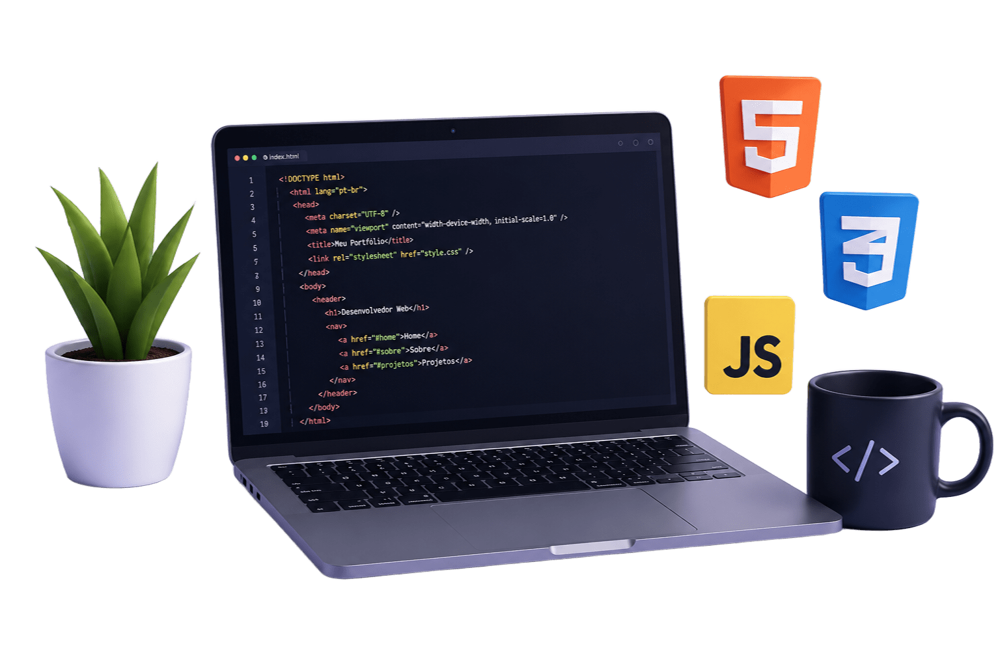

Front-end
Desenvolvimento de interfaces modernas, responsivas e focadas em experiência do usuário.
Tenho conhecimento em HTML, CSS e JavaScript, além de experiência
com Linux
e modelagem de banco de dados. Busco sempre aprender novas
tecnologias
e melhorar minhas habilidades.

Desenvolvimento de interfaces modernas, responsivas e focadas em experiência do usuário.
Uso de Linux para estudo, desenvolvimento, automação e gerenciamento de sistemas.
Modelagem, consultas SQL e estruturação de dados para aplicações eficientes.
Criação de layouts limpos,
instrutivos e experiências que
geram impacto.
| Tecnologia | Nivel | Experiência | Uso |
|---|---|---|---|
| Html | Avançado | 2 Anos | Diario |
| CSS | Avançado | 2 Anos | Diario |
| JavaScript | Intermediário | 1 ano | Frequente |
| Bootstrap | Intermediário | 1 ano | Frequente |
| PHP | Basico | 6 meses | Eventual |
| Mysql | Intermediário | 1 ano | Frequente |
| Git & Github | Intermediário | 1 ano | Diário |
| Linux | Intermediário | 2 anos | Diário |